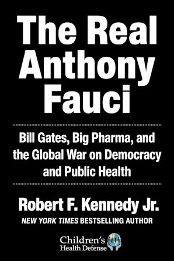
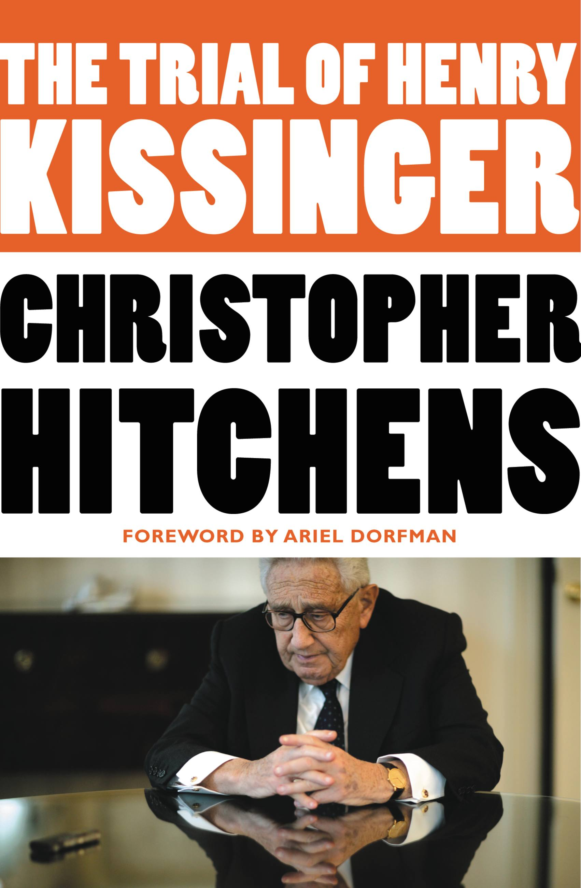
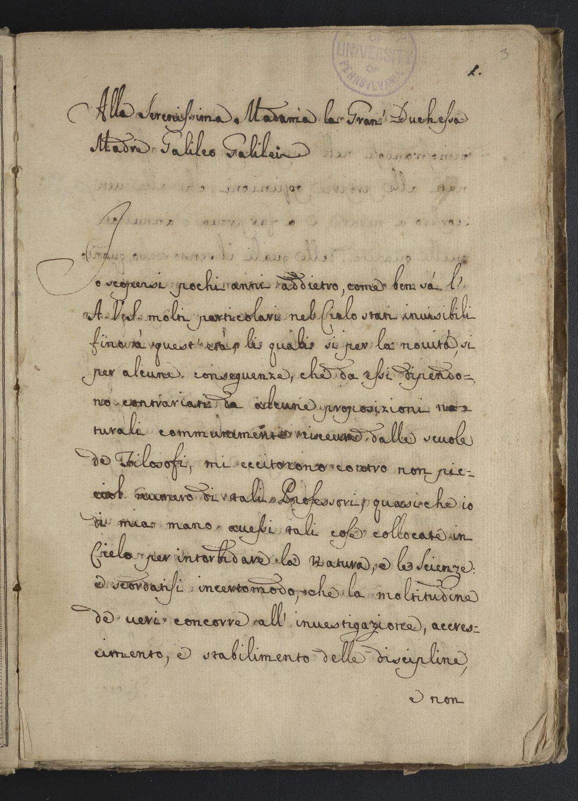
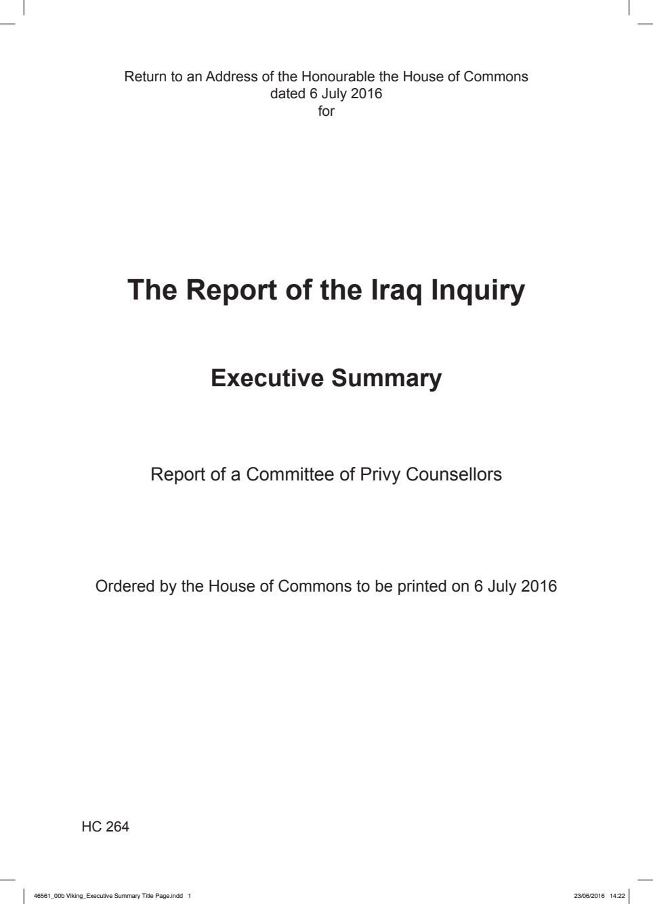
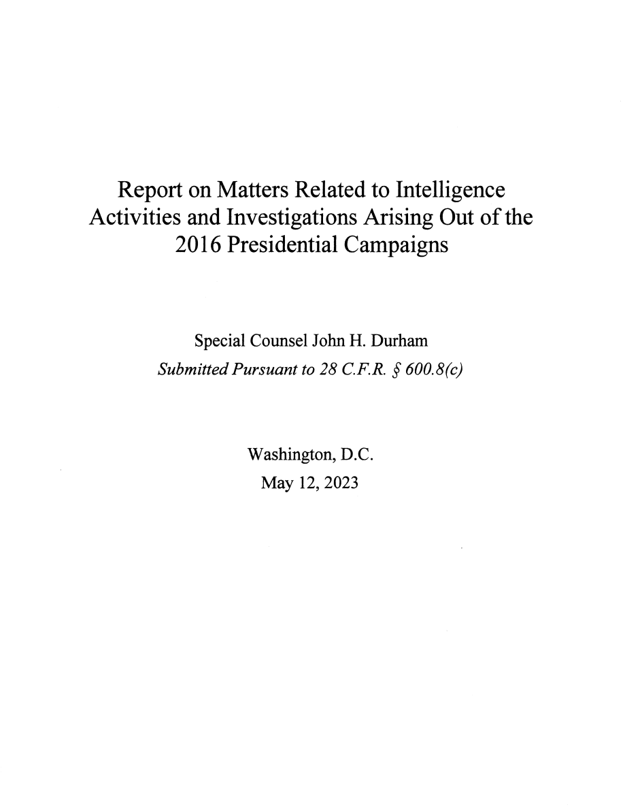
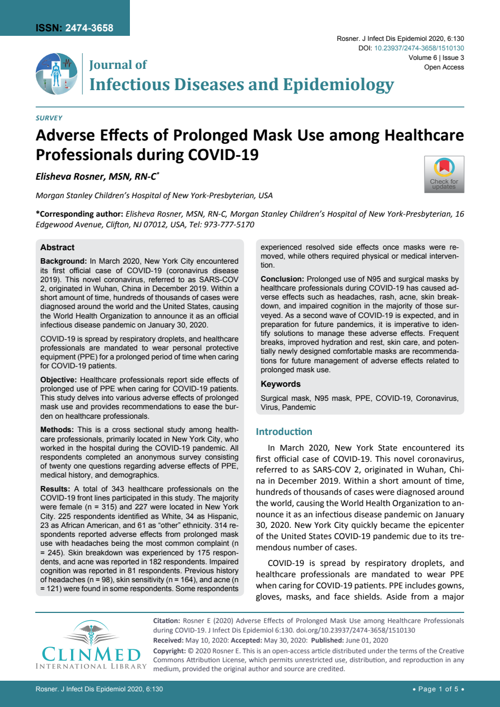
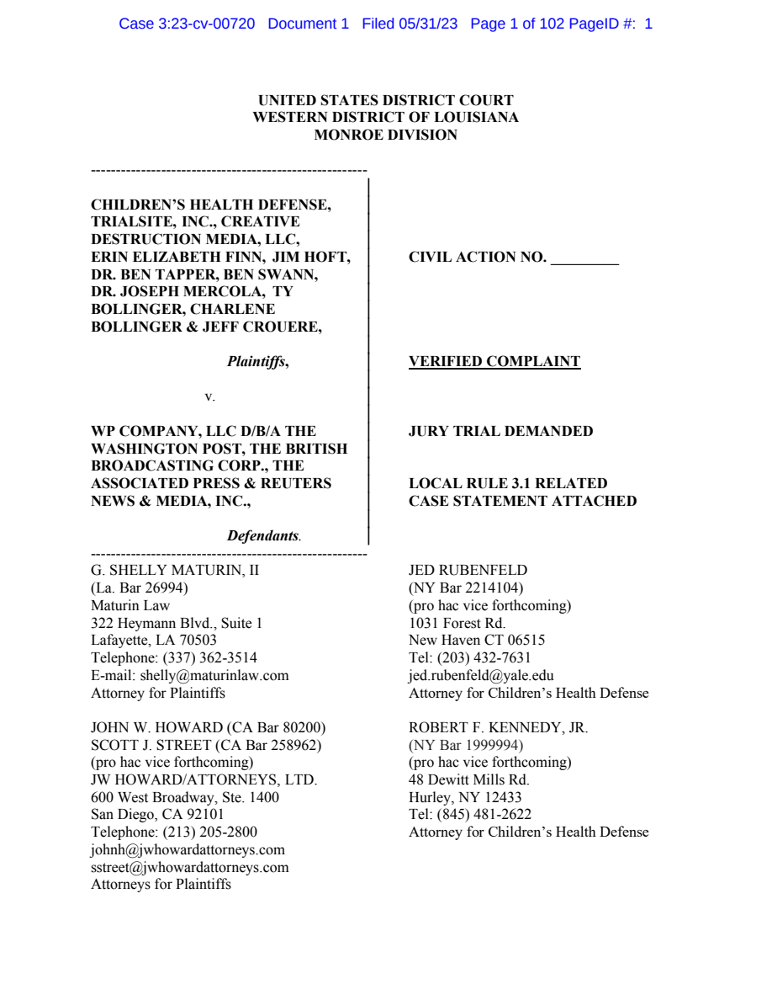
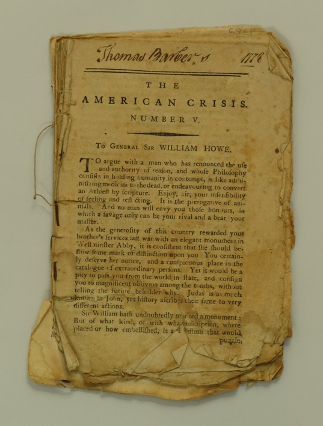

1:08:49 · 16 OPERE
La realtà fatta a pezzi. L'impossibile situazione della modernità.
Il filo del discorso
Nel contesto del giugno 2023, il relatore raccoglie vicende universitarie, comunicazione sanitaria e conflitti sull’informazione dentro una tesi comune: la modernità avrebbe separato titoli, autorità e riconoscimento pubblico dalla responsabilità di argomentare. La dedica ad Arne Burkhardt introduce un ideale di integrità che il discorso contrappone all’industria culturale. Gli esempi non costituiscono una rassegna rappresentativa di tutti gli atenei: sono scelti e interpretati dal relatore per sostenere la propria diagnosi culturale. La vicenda della docente newyorkese che minaccia un reporter con un machete apre la contrapposizione fra dialogo e coercizione. Il relatore accosta alla violenza fisica l’uso intimidatorio dell’autorità scientifica e il controllo delle piattaforme. La satira del cittadino che non vede, non sente e non parla riassume il timore di un consenso passivo. Le fotografie di persone mascherate e di Oliver Kurzai vengono però trattate criticamente nella scheda: aspetto del volto, abitudini e tatuaggi non consentono di dedurre salute mentale, autonomia o competenza. The Empty Campus e La società del contrario collocano la polemica nel lavoro precedente dell’autore. Gödel, Einstein e Oppenheimer offrono un’immagine alternativa del riconoscimento del merito; la citazione di Galileo sui sensi e la ragione è ricondotta alla Lettera a Cristina di Lorena. La cerimonia di Siena per Fauci e Rappuoli porta al libro The Real Anthony Fauci e al paragone con il saggio di Hitchens su Kissinger. Identificare un libro o registrare una causa non equivale a confermare le sue accuse; anche l’assenza di una querela non dimostra la verità di ogni affermazione. Nell’ultima parte, il caso Klarenberg a Luton, l’inchiesta sull’Iraq e il rapporto Durham diventano esempi del rapporto fra potere e accesso ai documenti. Il racconto giornalistico, le conclusioni di un’inchiesta indipendente e una sentenza penale sono mantenuti distinti. Un errore del passaggio sui Georgofili viene corretto: l’attentato provocò cinque morti. Il riferimento alle maschere è confrontato con l’articolo Rosner, pubblicato a giugno 2020 e basato su un questionario fra operatori sanitari; non dimostra inutilità o danno universale dei dispositivi. La complaint CHD/TNI viene identificata come atto di parte del 31 maggio 2023. Paine, Trasimaco e Giobbe chiudono infine il discorso sul valore morale della ragione, lasciando esplicite le citazioni non localizzate e le accuse che restano del relatore.
I libri nel discorso

Costituzione della Repubblica Italiana
Copertina dell’edizione Intra aggiornata al 2023: Intra · 2023 · introduzione di Umberto Vincenti
Copertina autentica del testo integrale, aggiornata alla legge costituzionale 26 settembre 2023 n.1. È successiva al filmato del 2019 e non rappresenta la versione storica letta dal relatore. Umberto Vincenti firma l’introduzione.
La Costituzione italiana è richiamata esplicitamente nella critica del relatore alle politiche pandemiche e alla Corte costituzionale. La menzione non certifica la sua interpretazione giuridica.
Passaggio 14:05 ↗ · Fonti e libro ↗
The Empty Campus
Copertina: Lulu · edizione inglese di riferimento
Immagine associata all’ISBN di riferimento e controllata visivamente; edizione e traduzione non identificate come quelle citate o lette nel video.
Il relatore nomina il proprio testo The Empty Campus; vi torna a 1631 secondi per l’aneddoto su Gödel.
Passaggio 17:58 ↗ · Fonti e libro ↗
La società del contrario
Copertina: Zambon · 2005
Copertina autentica dell’edizione di riferimento, controllata visivamente. Non identifica l’esemplare letto o citato nel video.
La società del contrario è esplicitamente nominata e collocata dal relatore nel 2005.
Passaggio 18:03 ↗ · Fonti e libro ↗
The Real Anthony Fauci. Bill Gates, Big Pharma, and the Global War on Democracy and Public Health
Copertina originale Skyhorse 2021: Skyhorse Publishing · 2021 · hardcover · ISBN 9781510766808
Copertina autentica dell’edizione inglese originale. Il relatore non accerta l’esemplare specifico. La qualificazione polemica non trasforma affermazioni dell’autore in fatti accertati.
Il titolo The Real Anthony Fauci e Robert Kennedy Jr. sono nominati per criticare la laurea ad honorem. La verifica presso Skyhorse non adotta come fatti le accuse del libro.
Passaggio 39:18 ↗ · Fonti e libro ↗
The Trial of Henry Kissinger
Identificazione probabile
Copertina: Twelve / Hachette · nuova edizione 2012
Copertina autentica dell’edizione paperback Twelve del 10 aprile 2012, con introduzione di Ariel Dorfman, pubblicata da Hachette. Edizione del video non identificata; nessuna identificazione con una sentenza o un dossier giudiziario ufficiale.
Il libro su Kissinger come criminale di guerra rinvia probabilmente a The Trial of Henry Kissinger di Hitchens. Titolo e autore non pronunciati: rimando mantenuto probabile, non verdetto giudiziario.
Passaggio 40:40 ↗ · Fonti e libro ↗
Lettera a Madama Cristina di Lorena, granduchessa di Toscana
Identificazione probabile
Incipit della copia manoscritta UPenn Ms.Codex 369, foglio3 r: Testo 1615 · copia manoscritta successiva · UPenn Ms.Codex 369 · foglio3 r
Pagina iniziale del testo nella copia manoscritta universitaria. Non autografo di Galilei, non copertina di un’edizione moderna. Il catalogo indica 58 fogli e scrittura di una sola mano successiva al 1615.
La frase attribuita a Galileo sui sensi, ragione e intelletto corrisponde alla Lettera a Cristina 1615. Titolo non pronunciato; riscontro testuale e copia manoscritta verificati.
Passaggio 45:08 ↗ · Fonti e libro ↗
Wider den Gehorsam (Contro l’obbedienza)
Copertina: Copertina autentica Klett-Cotta, ISBN 9783608948912, opera del 2014: fondo arancio, autore e titolo bianchi, grifone nero dell’editore. Colophon verificato nell’estratto editoriale; non è una edizione italiana.
Immagine autentica dell’opera, controllata visivamente; l’edizione di riferimento non è attribuita al filmato.
Arno Gruen e Wider den Gehorsam sono nominati con traduzione orale sul resistere o contestare l’obbedienza.
Passaggio 46:03 ↗ · Fonti e libro ↗British police detain journalist Kit Klarenberg, interrogate him about The Grayzone
Identificazione probabile
Fotografia illustrativa pubblicata con l’articolo The Grayzone: The Grayzone · 30 maggio 2023
Immagine editoriale originale dell’articolo, illustrativa della polizia aeroportuale. Non documenta da sola il fermo e non identifica i due agenti come quelli coinvolti. Non copertina di un libro o una sentenza sul caso.
Il relatore legge l’articolo 30 maggio 2023 sul fermo del 17 maggio di Kit Klarenberg a Luton: numero degli agenti, dispositivi e interrogatorio coincidono con il testo Blumenthal. Titolo non pronunciato; corrispondenza probabile.
Passaggio 46:57 ↗ · Fonti e libro ↗
The Report of the Iraq Inquiry (Chilcot Report)
Frontespizio dell’Executive Summary,2016: Iraq Inquiry / Cabinet Office · 2016 · Executive Summary HC264
Immagine del frontespizio dell’Executive Summary, non copertina esterna del rapporto completo. L’ordine parlamentare di stampa non rende l’inchiesta un processo penale.
Chilcot Report e pubblicazione 2016 sono espliciti. L’inchiesta indipendente è distinta da una sentenza penale contro Tony Blair.
Passaggio 51:42 ↗ · Fonti e libro ↗
Report on Matters Related to Intelligence Activities and Investigations Arising Out of the 2016 Presidential Campaigns (Durham Report)
Frontespizio originale Durham Report,2023: U.S. Department of Justice · 12 maggio 2023 · rapporto non classificato
Frontespizio originale, pagina PDF3. Le critiche alle indagini restano quelle del rapporto; la menzione non prova una censura completa né condanne non pronunciate.
Il Durham Report appena uscito negli Stati Uniti viene nominato accanto a Chilcot. Identificato il rapporto DOJ12 maggio 2023 pubblicato il 15 maggio.
Passaggio 51:59 ↗ · Fonti e libro ↗
Adverse Effects of Prolonged Mask Use among Healthcare Professionals during COVID-19
Identificazione probabile
Prima pagina dell’articolo Rosner 2020: Journal of Infectious Diseases and Epidemiology · 6(3):130 · 1 giugno 2020
Pagina iniziale autentica dell’articolo.343 operatori rispondenti e sintomi riferiti non costituiscono un esperimento controllato su efficacia antivirale o prova di danno universale. Non è un consiglio clinico.
Il relatore cita uno studio 2020 sugli effetti dell’uso prolungato delle maschere nel Journal of Infectious Diseases and Epidemiology. I dettagli convergono su Rosner6:130; titolo non letto e data marzo nel parlato inesatta.
Passaggio 59:33 ↗ · Fonti e libro ↗
Children’s Health Defense et al. v. WP Company LLC et al. — Verified Complaint, 31 May 2023
Identificazione probabile
Prima pagina della Verified Complaint CHD/TNI,31 maggio 2023: U.S. District Court, Western District of Louisiana · Case3:23-cv-00720 · Document1 · 31 maggio 2023
Prima pagina del vero atto depositato, con timbro elettronico e parti. Il PDF contiene 108 pagine complessive, comprendendo la numerazione principale1–102 e documenti aggiunti. Convenute sono quattro testate: non tutte le piattaforme nominate nel racconto sono parti convenute.
Data 31 maggio 2023, CHD, TNI, quattro testate e atto di oltre 100 pagine convergono sulla complaint Case3:23-cv-00720. Documento di parte e causa antitrust, non condanna delle piattaforme.
Passaggio 1:01:03 ↗ · Fonti e libro ↗
Costituzione degli Stati Uniti d’America
Copertina della raccolta: Testo firmato il17settembre1787. Per l’immagine si usa la raccolta Penguin Classics The Federalist Papers, ISBN 9780140444957, che dichiara di includere il testo della Costituzione; non è una fotografia della pergamena originaria.
Copertina autentica di The Federalist Papers: la descrizione editoriale attesta che la raccolta comprende il testo completo della Costituzione. Non è il frontespizio costituzionale del 1787 e Hamilton, Madison e Jay non sono presentati come unici autori del documento.
Il Primo emendamento sulla libertà di parola è esplicitamente richiamato. Il riferimento riguarda la Costituzione statunitense con i suoi emendamenti.
Passaggio 1:02:51 ↗ · Fonti e libro ↗
La Repubblica
Copertina: Laterza · La Repubblica · edizione con testo a fronte di riferimento
Immagine associata all’ISBN di riferimento e controllata visivamente; edizione e traduzione non identificate come quelle citate o lette nel video.
La Repubblica di Platone e Trasimaco sono nominati per la tesi del giusto come utile del più forte. È la posizione di un personaggio nel libro I, non una massima accolta automaticamente da Platone.
Passaggio 1:04:02 ↗ · Fonti e libro ↗
The American Crisis, Number V. To General Sir William Howe
Identificazione probabile
Prima pagina dell’opuscolo The American Crisis V,1778: The American Crisis · Number V · 1778 · facsimile dell’opuscolo
Fotografia autentica della pagina iniziale dell’opuscolo conservata dall’associazione storica. La seconda massima sulle tirannie, anch’essa attribuita oralmente a Paine, non è stata localizzata e non viene assegnata a questo testo.
La frase sul ragionare con chi ha rinunciato alla ragione corrisponde all’incipit di The American Crisis V1778. Il titolo non è pronunciato e l’altra massima sulle tirannie non è stata localizzata in questo testo.
Passaggio 1:06:06 ↗ · Fonti e libro ↗
Giobbe
Copertina del volume completo: San Paolo, 2014 · Nuova Versione dai Testi Antichi · edizione di riferimento
Giobbe è un libro della Bibbia. L’immagine mostra il volume completo San Paolo di riferimento, non un’edizione autonoma del singolo libro e non una versione identificata nella citazione.
Giobbe è esplicitamente nominato; il passo sull’omicida che si alza quando non c’è luce corrisponde a 24:14 nella versione CEI 2008.
Passaggio 1:08:32 ↗ · Fonti e libro ↗Fonti e approfondimenti (26)
- assets.publishing.service.gov.uk ↗
- childrenshealthdefense.org ↗
- clinmedjournals.org ↗
- colenda.library.upenn.edu ↗
- digital-strategy.ec.europa.eu ↗
- news.mit.edu ↗
- sourcebooks.fordham.edu ↗
- thegrayzone.com ↗
- thomaspaine.org ↗
- archives.gov ↗
- bibbiaedu.it ↗
- comune.firenze.it ↗
- fda.gov ↗
- gov.uk ↗
- gutenberg.org ↗
- hygiene.uni-wuerzburg.de ↗
- ias.edu ↗
- ias.edu ↗
- interno.gov.it ↗
- justice.gov ↗
- senato.it ↗
- skyhorsepublishing.com ↗
- unisi.it ↗
- unisi.it ↗
- who.int ↗
- ynharari.com ↗